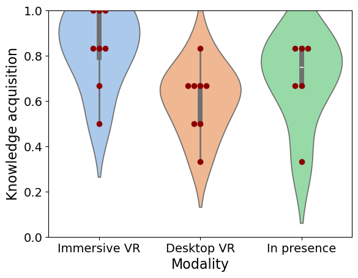
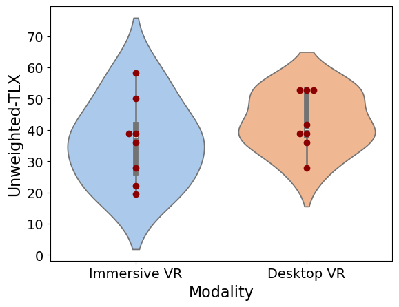
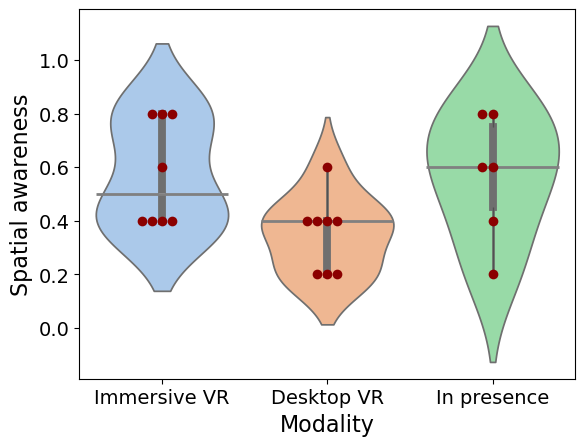

Students explore a fully interactive virtual replica of the ICE Lab across three modalities: immersive VR on Meta Quest 3, desktop VIROO client, or in-person guided tour, each compared in a formal user study.
The ICE Lab is a world-class teaching resource, but it is physically constrained: limited floor space, high demand across multiple courses, and the practical impossibility of accommodating all 80+ master's students simultaneously during hands-on sessions.
For students who are geographically remote, have mobility disabilities, or simply cannot schedule on-site access, core parts of the curriculum become difficult or impossible to engage with at full depth.
ICETeachXR Scenario 1 addresses this directly: a high-fidelity VR replica of the lab, live-connected to the physical machines, that any student can access with a standalone headset from their home, dormitory, or any location worldwide.
No commute, no scheduling conflict, no physical disability barrier. The virtual lab is open whenever the student needs it.
Remote and on-campus students work through the same tasks with the same tools, measured by the same metrics.
Dozens of students can use the virtual environment simultaneously, unlike the physical lab where only a handful can work at once.
The platform is designed for rigorous comparative evaluation: VR-trained students vs. traditional instruction, with standardised UX and learning metrics.
The learning experience is structured in five phases, spanning teacher preparation to student evaluation.
Using the ICETeachXR authoring tools, the teacher creates a guided task within the virtual environment: placing annotations on machines, defining step-by-step instructions, setting checkpoints, and specifying which production sequences to practise.
The published module is pushed to each student's Meta Quest 3. Students are notified of the learning task and can begin at their own pace within the assigned window.
Students enter the virtual ICE Lab, move freely between stations, and read machine status information displayed in real time. The environment reflects the actual state of the physical lab at that moment.
Following the teacher's annotations and guided steps, students interact with virtual machines using natural hand gestures, configuring production recipes, reading machine states, and observing production sequences in real time.
After the session, students complete standardised questionnaires covering usability, cognitive load (NASA-TLX), and a knowledge pre/post test. Teachers review the aggregated results to assess learning outcomes across modalities.
The VR environment is designed to be as informative and interactive as the physical lab, with specific enhancements for guided learning.
Every machine, conveyor, and robot present in the physical ICE Lab is reproduced in the virtual environment, with accurate spatial positioning and appearance.
Machine operational data (speed, status, production counts, alarms) is streamed in real time from the physical lab via MQTT, keeping the virtual twin perpetually up to date.
Students use natural hand gestures tracked by the Quest 3 to interact with control panels, select production recipes, and navigate menus, no controller required.
Teacher-placed notes, arrows, and instructional widgets appear anchored to relevant machines or areas, guiding students through the task without breaking immersion.
When desired, multiple students join the same virtual session simultaneously, enabling group exercises, peer observation, and live teacher guidance within the shared environment.
Students ask questions about any machine by voice via push-to-talk. Whisper.ai transcribes locally; Google Gemini generates a context-aware answer based on the machine being looked at and its live operational status.
The objective of the Computer Engineering for Intelligent Systems degree program is to provide students with knowledge and skills typical of information engineering to enable them to identify, formulate, analyze, and solve problems related to the design, integration, and management of complex systems, particularly those related to manufacturing and personal care. The course aims to train graduates to combine advanced skills in a range of enabling technologies in computer engineering, such as industrial robotics, cyber-physical systems, human-computer interaction, visual computing, big data and digital design, with application domain-related skills to optimize the use of information technology in the industrial environment to automate manufacturing processes or to develop new applications for personal care and work on the digital transition in medicine.
See the homepage: https://www.corsi.univr.it/?ent=cs&id=1291&menu=home&lang=en
A formal user study with 22 CEIS Master's students compared immersive VR, desktop VR, and in-person learning side by side. Ethics approval was granted by the University of Verona Research Ethics Committee (CARP) on February 11, 2026.
Participants were assigned to three groups: immersive VR on Meta Quest 3 (n=8), desktop VIROO client (n=8), and in-person guided visit (n=6). All groups completed a knowledge pre/post test on ICE Lab architecture, machine functions, and production workflows. Immersive VR achieved an 83.3% knowledge acquisition rate, a 16 percentage-point lead over both desktop VR (66.7%) and in-person (67.4%), with the difference confirmed statistically significant (Kruskal-Wallis H = 6.227, p = 0.04). NASA-TLX workload averaged 39.6 across VR groups, indicating low cognitive load, and ease of use was rated significantly higher for VR than traditional instruction (p = 0.01). The results support immersive XR as an effective and scalable alternative to physical lab visits.
Knowledge acquisition: immersive VR
Knowledge acquisition: desktop VR
Knowledge acquisition: in-person
Kruskal-Wallis H = 6.227 (significant)

Knowledge acquisition by modality

NASA-TLX cognitive load by modality

Spatial awareness by modality
An initial session during "Embedded and IoT Systems Design" (Prof. Fummi) had seven students use the standalone Meta Quest 3 app alongside a group visiting the physical lab. This session informed the design of the formal comparative study.
No prior XR learning study in this context has simultaneously contrasted immersive VR headset, desktop VR client, and in-person lab visit. The desktop modality makes the comparison relevant for institutions without dedicated headset fleets.
The second educational scenario brings robotic trajectory planning into XR; students interact with a JAKA ZU 5 arm and visualise manipulability in real time.